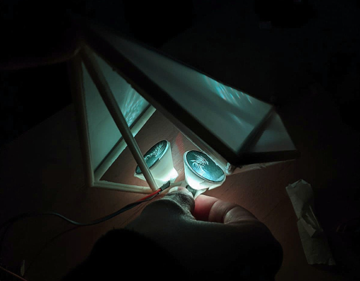

Proyecto Resprir0 Namiki
RespirO NAMIKI es una experiencia estética, bioactivista y sensible del mundo cotidiano. Su sistema está conformado por esculturas lumínicas que realizan biosensados y una atmósfera virtual colaborativa anidada en la web. La forma de las esculturas lumínicas, al igual que las luces que proyectan, surgen del sensado de eventos vitales.
El dispositivo electrónico embebido en ellas mide la concentración de dióxido de carbono (CO2) en ppm en el aire, siendo este compuesto químico uno de los principales indicadores de contaminación. Nuestra Atmósfera Namiki permite visualizar la red de dispositivos activos en distintos sitios. Se genera así una comunidad interconectada con independencia informacional y con posibilidades de autoprotección.
Ponemos el diseño a disposición de quienes quieran sumarse y protagonizar el cuidado de la atmósfera desde donde sea que estén. Así la experiencia estética de RespirO NAMIKI habita lo cotidiano para fusionar arte y vida.
Origen del proyecto
Desde principios de la pandemia Covid 19, el grupo MURU 7.8 en telecomunicación desarrolla dispositivos de sensado, medita sobre las relaciones vitales y observa gestos mínimos de los microuniversos recortados por el confinamiento. En este contexto nace el proyecto Namiki (en náhuatl, encontrarse en el camino) que invita a percibir las resonancias de eventos mínimos de nuestro entorno y descubrir por medio de su sensado la unión entre las entidades vivas.
RespirO Namiki, una de las producciones que surge de este proyecto, busca dar visibilidad a los componentes químicos de la atmósfera, un elemento natural que a todos nos toca, conecta y mantiene vivos. El formato apuesta a embeber dispositivos tecnológicos en un objeto lumínico asimilable al entorno cotidiano.
El módulo RespirO Namiki y su atmósfera
La estructura formal del módulo de biosensado conserva la memoria de los movimientos de un ser vivo en el espacio y en el tiempo. Surgida del roce entre las masas y las fuerzas en expansión de una planta, un animal humano o no humano, hace visible el aspecto energético y vibrátil del movimiento de los cuerpos en el espacio y su roce con él.
Cada evento sensado sucedió en tiempo de pandemia y significó para MURU 7.8 estar en contacto con lo esencial de la vida en el entorno cotidiano: Una tortuga que come por primera vez después de hibernar, una semilla que germina y se despliega por la tierra para asomar a la atmósfera, un perro que sale a pasear con su manada a la plaza mientras la mayoría de los humanos permanecemos confinados, una planta midiendo la fortaleza de sus fibras y estructura en la tormenta.
El dispositivo sensa y mide la calidad del aire según el nivel de dióxido de carbono (CO2) y lo comunica desde su interior con proyecciones visuales de las cristalizaciones surgidas del mismo sensado que le dio estructura formal. La intensidad lumínica y frecuencia de parpadeo nos permitirá saber, según la concentración de CO2 si en nuestro espacio el aire es saludable o si es necesario ventilar. Cuando la concentración es de 400 a 600 ppm la calidad de aire es aceptable. Si pasa de 600 a 1000 ppm, el riesgo de contagio aumenta, por lo cual se recomienda ventilar el ambiente. Si la concentración es mayor a 1000 ppm, el riesgo de contagio es muy alto, se recomienda evacuar el ambiente y ventilar para disminuir los valores de CO2.
La atmósfera colaborativa funciona en una página web. Es un espacio 3D conectado a los dispositivos a través de protocolo MQTT. Una base de datos registra los valores de sensado enviados por los módulos. Al mismo tiempo que se produce la visualización del conjunto de módulos en funcionamiento, un mapa y un gráfico muestra los valores en el tiempo y sus variaciones. La experiencia estética puebla muestro hábitat y modela nuestras prácticas culturales. Según Yuriko Saito (2012) tal es la importancia de nuestra sensibilidad y vida estética que es necesario cultivar su alfabetización y desarrollar la actitud vigilante hacia el uso de su poder. “A veces, las consideraciones estéticas pueden mover el Proyecto mundial hacia una sociedad más humana y justa” enuncia Saito. Con una actitud bioactivista ponemos el diseño a disposición de quienes quieran sumarse construyendo su propio dispositivo y protagonizar el cuidado de la atmósfera desde donde sea que estén. Por su cualidad colaborativa y concientizadora consideramos que RespirO NAMIKI es un diseño tecnológico para la conciencia ciudadana.